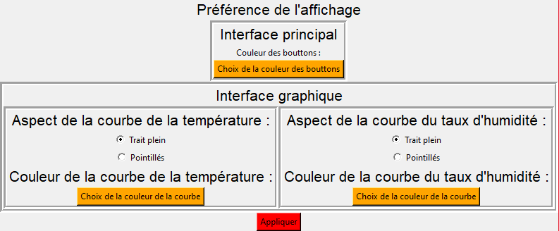

Sommaire de l'aide
Probleme de démarrage
Un erreur peut survenir lors du démarrage du logiciel. Ce problème peut être résolue par cette suite d'action que vous devez effectuer:
- Ouvrer l'application "invite de commande"
- écrivez "pip install matplotlib"
- puis écrivez "pip install pyperclip"
- enfin écrivez "pip install serial"

Utilier vos valeurs dans regressi
Vous pouvez exporter les valeur que vous avez mesuré dans regressi pour les exploiter plus précisément. Pour cela, après avoir effectué une série de mesures, cliquez sur Fichier > copier les mesures dans le press papier pour Regressi. Vous pouvez ensuite allez dans votre logiciel Regressi, cliquez sur Nouveau > press papier et vos valeurs seront itégrées dans ce logiciel.

Enregistrer vos valeurs dans un fichier texte
Après avoir effectuer des mesures, vous pouvez vous rendre dans Fichier>Enregistrer en txt. Choissiser un emplacement et votre mesure sara enregistré.
Rechercher une mesure dans l'historique
Allez dans Fichier>historique et vous pouvez rechercher les mesures que vous avez effectué grâce à la date de la mesures.
Enregistrer vos valeurs dans un fichier CSV
Après avoir effectuer des mesures, vous pouvez vous rendre dans Fichier>Enregistrer en CSV. Choissiser un emplacement et votre mesure sara enregistré. Si vous voulez ouvrir ce fichier avec un tableur (par exemple LibreOffice), selectionnez "séparé par" et "virgule".
Effectuer des mesures
Pour démarrer une mesure, après avoir connecté le capteur à votre ordinateur par le biais d'un câble usb, vous pouvez choisir d'abord l'unité de la durée de votre mesure. Puis vous pouvez selectionnez une durée pour la mesure ainsi qu'un intervalle de temps entre chaque mesure, et appuyer sur "démarrer la mesure".
Utiliser les préférences
Vous pouvez modifier la couleur des bouton, des courbes et l'apect des courbe du graphique. Pour cela vous pouvez aller dans Fichier > préférence, et faire vos modification. Appuyer enfin sur "Appliquer"
